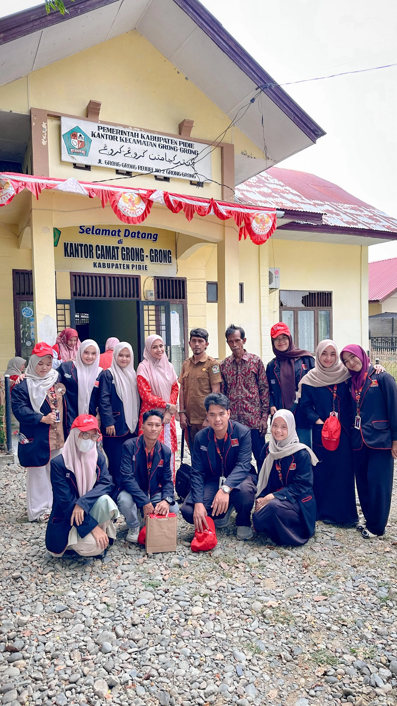
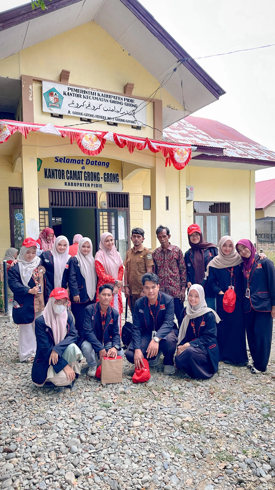

profil
Desa Gintong merupakan salah satu gampong tua di wilayah Kemukiman Beureuleung, Kecamatan Grong-Grong, Kabupaten Pidie. Berdasarkan cerita turun-temurun dari para tetua, Gintong sudah dihuni sejak masa Kerajaan Aceh Darussalam ketika wilayah Pidie menjadi salah satu pusat pertanian dan perdagangan penting.
Nama “Gintong” diyakini berasal dari kata “Gintoeng” dalam bahasa Aceh lama yang berarti tanah yang subur dan berair. Hal ini berkaitan dengan kondisi geografis desa yang dikelilingi sawah dan dialiri beberapa saluran irigasi. Kesuburan tanah inilah yang menjadikan Gintong dikenal sebagai desa pertanian sejak dahulu.
Pada masa penjajahan Belanda, Gintong menjadi salah satu basis perlawanan rakyat. Banyak pemuda desa ikut dalam perang gerilya bersama pejuang Aceh melawan kolonial. Bekas jalur perkampungan yang menuju hutan pernah dijadikan tempat persembunyian pasukan. Setelah kemerdekaan, Gintong berkembang sebagai desa dengan basis pertanian padi, palawija, dan kelapa. Selain itu, warga juga dikenal dengan keterampilan mengolah hasil bumi, salah satunya produksi kolang-kaling yang masih bertahan hingga kini sebagai usaha turun-temurun.
Dalam perkembangannya, Desa Gintong resmi ditetapkan sebagai bagian dari Kecamatan Grong-Grong saat pemerintah melakukan penataan wilayah administratif Kabupaten Pidie pada era 1970-an. Seiring waktu, pembangunan desa terus berjalan melalui gotong royong masyarakat, bantuan pemerintah, serta dukungan dari perantau.
Kini, Desa Gintong tetap menjaga tradisi Aceh yang kental dengan nilai keislaman, gotong royong, dan silaturahmi. Dengan potensi lahan pertanian yang luas serta usaha kecil masyarakat, Gintong menjadi salah satu gampong yang cukup berperan dalam mendukung ketahanan pangan di Kecamatan Grong-Grong.
peta
kependudukan
| nama dusun | laki-laki | perempuan | jumlah |
| Dusun Babah Rapat | 104 | 112 | 216 |
|---|---|---|---|
| Dusun Teungoh | 100 | 110 | 210 |
| Dusun Teureunee | 119 | 130 | 249 |
| total | 675 | ||
galeri
 
